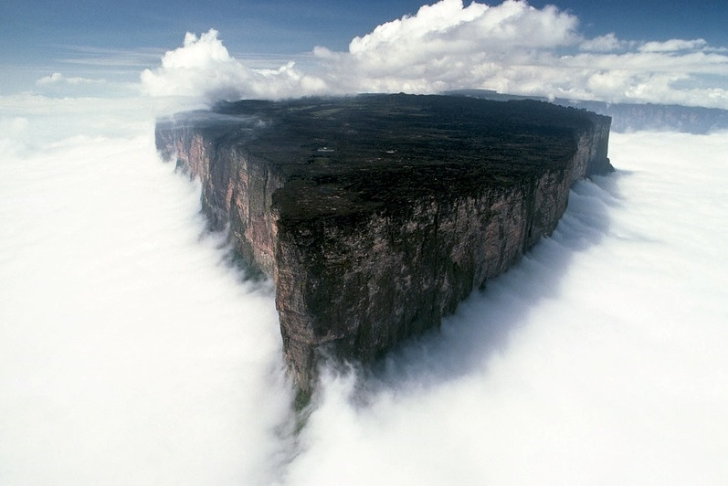
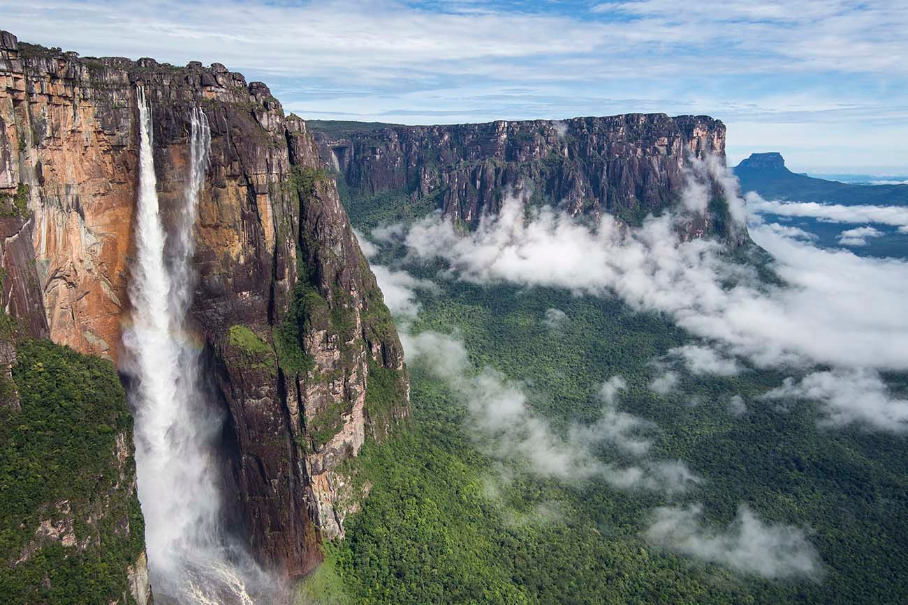
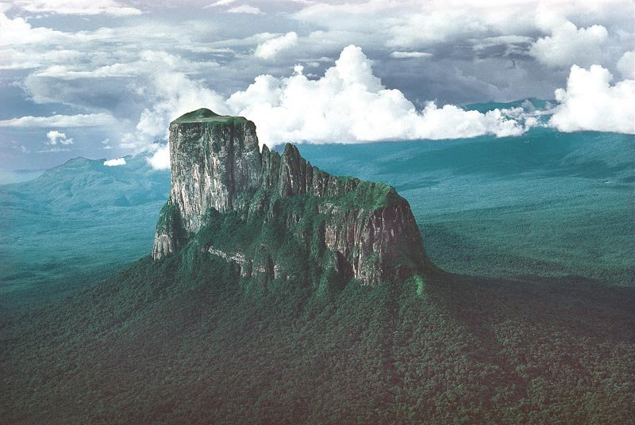
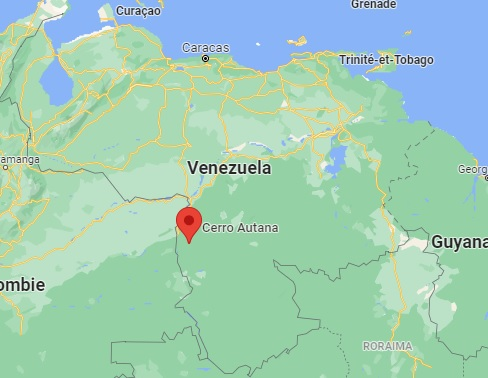

Tepuys
Un tepuy est un haut plateau à contours particulièrement abrupts, fréquent dans la Gran Sabana vénézuélienne et dans les régions voisines (au Guyana, en Guyane française, au Brésil et en Colombie). Ce sont des reliefs tabulaires résiduels, dont les altitudes s'échelonnent de 1 200 à 3 050 m. Outre leur forme, les tepuys présentent des milieux naturels spécifiques, riches en espèces endémiques en raison de l'isolement de ces reliefs et de leurs contrastes climatiques forts. Le mot tepuy ou tepui proviendrait de la langue caribe des Pemóns et signifierait « montagne ».
Mont Roraima
Le Mont Roraima est une majestueuse montagne, la tête dans les nuages, qui sert de point de triple frontière au Venezuela, au Brésil et à la Guyane. Ce mont est sacré pour les Indiens Piaroa offre un panorama époustouflant depuis le plateau qui culmine à 1200 mètres.
| Coordonnées | Hauteur |
|---|---|
| 08′ 28″ nord, 60° 45′ 50″ ouest | 2810m |

|
|
Auyantepuy
C'est là que se trouvent les célèbres « Chutes de l'Ange (Kerepakupai Vená - L'endroit le plus profond) » Elle est considérée comme un site du patrimoine mondial par l'UNESCO. Auyantepui au sens de la langue Pemón signifie "Montagne du Diable".
| Coordonnées | Hauteur |
|---|---|
| 5° 48′ 14″ nord, 62° 28′ 03″ ouest | 2535m |

|
|
Autana
Lieu sacré d'une ethnie amazonienne appelée Piaroa, ils racontent sous leur légende et mythologie qu'Autana tepui représente l'arbre de vie, le lieu d'où proviennent les fruits et les animaux qui ont servi l'homme tout au long de la vie.
| Coordonnées | Hauteur |
|---|---|
| 4° 51′ 28″ nord, 67° 26′ 57″ ouest | 1250m |
|  | |